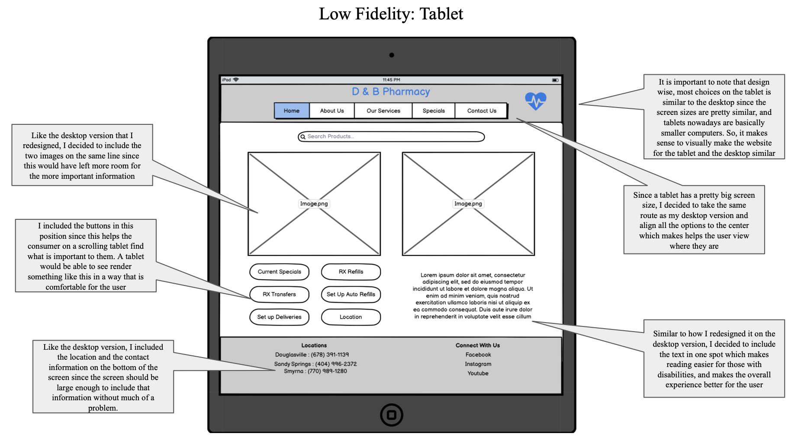
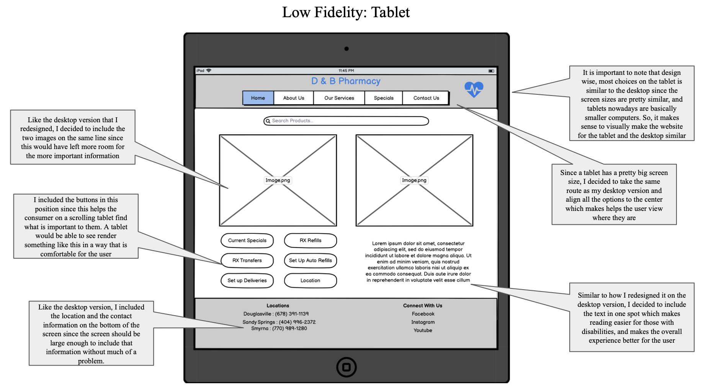

We were tasked with redesigning a website so that it is more usable and efficient. This assignment
allowed us to practice working with HTML and CSS, and it gave us more experience in identifying and fixing
flaws in interfaces. I chose to redesign D&B Pharmacy
D & B Pharamacy is a pharmaceutical company which allows the users to buy prescription drugs
* When you shrink the screen to that of an iphone, the image to the right disappears and
the text moves under the buttons. Also the contact us section in the bottom right also disappears.
Both of these decisions were made so that the iphone version looked as minimalistic as possible.
* Take a look at the menu like bar at the top that includes home, about us, and the other options, if
you shrink the screen, the specials and the contact us will go under the home about us and services.
This setting is for the smartphone screens so the menu does not look too crowded on a smaller phone
* You can hover over the menu tabs and it will turn into a different color
* You can also hover over the buttons on the bottom left portion of the screen and they will turn into
another color.
* You can type into the search bar what ever you want, and clicking enter or the search logo will submit
the thing that you just sent (it reloads the page)
 
